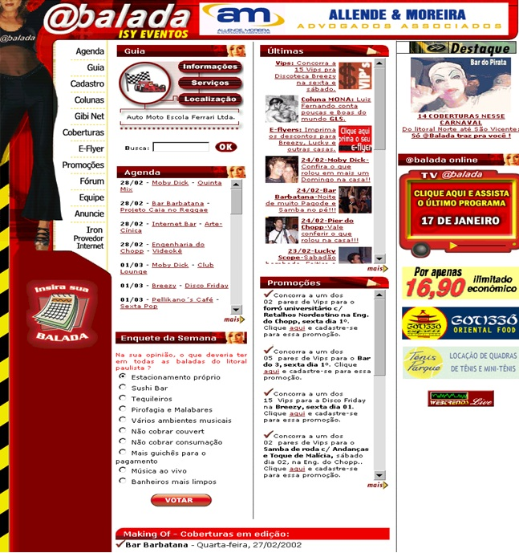
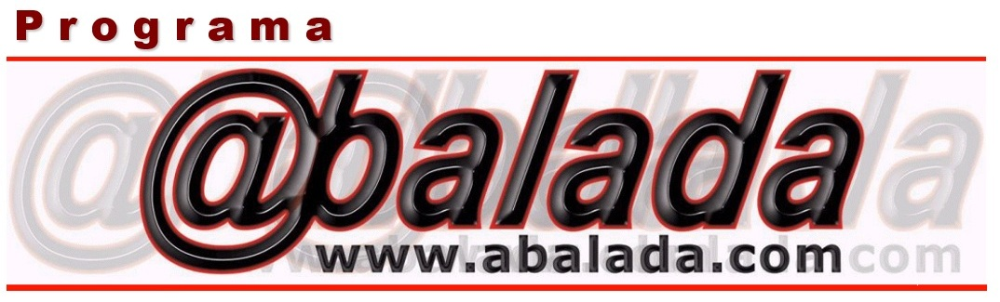
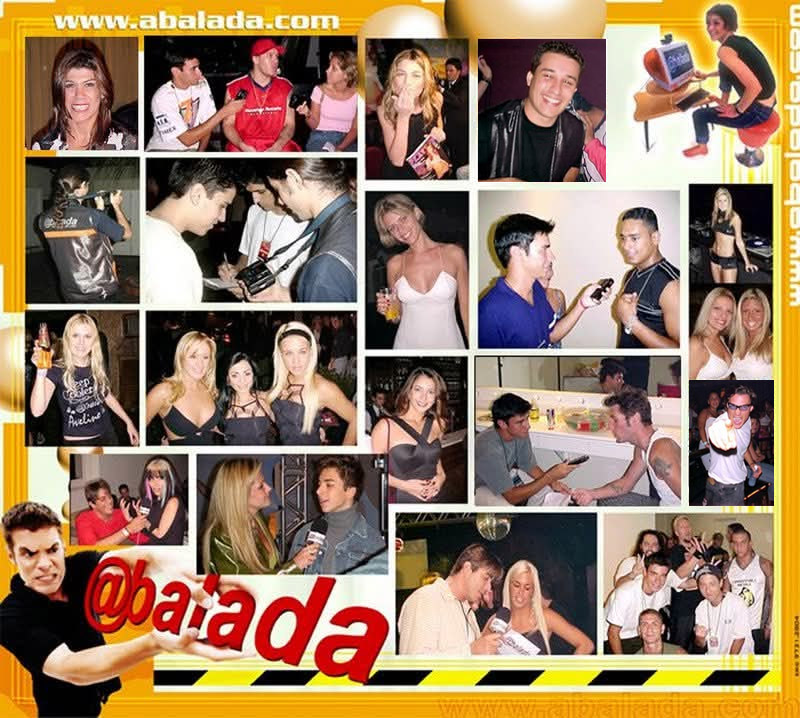
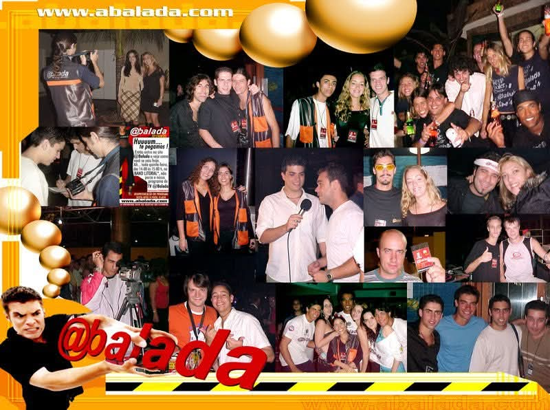

Olá!, eu sou Jamil José Júnior, natural de Santos e apaixonado por tecnologia. Tenho anos e atuo na área de Tecnologia da Informação há mais de 30 anos. Minha trajetória é marcada pela liderança de projetos que impulsionam negócios no universo digital — de e-commerce a soluções inovadoras em comunicação online.
Também integrei minha atuação no setor de Tecnologia da Informação ao mercado de comunicação, marketing e entretenimento, conduzindo projetos que uniram soluções digitais a estratégias de conteúdo e experiências ao vivo. Estive à frente da criação e coordenação de sites e plataformas digitais voltadas para eventos, bem como na idealização, produção executiva e direção de programas de televisão, shows, eventos corporativos e campanhas publicitárias. Minha trajetória me permitiu transitar entre os bastidores e o palco, sempre com uma visão estratégica, criativa e orientada para resultados, conectando marcas, público e plataformas através de narrativas envolventes, experiências memoráveis e soluções inovadoras em comunicação integrada.
Sou movido por desafios e acredito que a tecnologia é uma ponte poderosa para conectar pessoas, ideias e oportunidades. Tenho um perfil proativo, gosto de estar sempre antenado às tendências e busco transformar inovação em resultados práticos.
No dia a dia, levo a vida com leveza, bom humor e uma boa dose de energia positiva. Acredito que relações humanas são tão importantes quanto a tecnologia — por isso, valorizo a comunicação, o trabalho em equipe e a construção de ambientes colaborativos.
Iniciei minha trajetória profissional ainda durante o curso técnico em Processamento de Dados, em 1990, e desde então venho acumulando experiência prática e exercendo liderança em projetos inovadores. Atuei como professor de informática por seis anos na rede S.O.S. Computadores e, em 2000, tornei-me sócio e gestor de uma empresa de tecnologia especializada em soluções para o comércio eletrônico.
Essa empresa foi um dos marcos da minha carreira, onde adquirimos 51% do site @balada (www.abalada.com), um site local de eventos que passou por uma reestruturação e se transformou em um portal com milhões de acessos diários. O projeto também deu origem a um programa de TV exibido pela emissora de TV Bandeirantes, combinando tecnologia, produção de conteúdo e comunicação, e alcançando grande audiência em diversas regiões do Estado de São Paulo.
Com o encerramento dessa empresa, em 2004, ingressei como professor na Escola Técnica Treinasse e retornei ao mercado de TI, atuando na gestão de projetos voltados ao desenvolvimento de serviços online.
Desde 2008, venho integrando tecnologia e comunicação de forma estratégica, atuando como Assessor de Imprensa e TI em uma instituição filantrópica de Santos que oferece atendimento gratuito a crianças e jovens com deficiência intelectual nas áreas de Educação, Saúde e Assistência Social.
Nesse papel híbrido, conecto o universo da informação à inovação, liderando iniciativas que vão desde a gestão da imagem institucional até o desenvolvimento de soluções tecnológicas internas, otimizando processos administrativos e fortalecendo a atuação da entidade. Também participo diretamente da viabilização de compras por meio de emendas parlamentares destinadas aos projetos da instituição, conduzindo a aquisição de equipamentos de ponta e recursos digitais — sempre com o foco em aprimorar os serviços prestados à comunidade, promovendo impacto social e inclusão digital.
Paralelamente, lidero o Infinitoonline, um projeto autoral e visionário que nasce da convergência entre tecnologia, experiência do usuário e novas possibilidades de negócio. Atualmente em fase de reestruturação, trata-se de um ecossistema digital em desenvolvimento, alinhado a tendências como inteligência artificial generativa, Web 4.0, APIs inteligentes e plataformas omnichannel, com o propósito de reinventar e criar novos serviços, com experiências imersivas, fluidas e centradas no usuário. Por ora, mantenho os detalhes sob sigilo estratégico, mas posso afirmar que o projeto representa uma nova forma de pensar o digital.
Curso Superior ─ Em andamento
Instituição: Centro Universitário Internacional UNINTER
Curso: Bacharelado em Ciência da Computação
O curso de Bacharelado em Ciência da Computação da UNINTER oferece uma formação sólida e abrangente, capacitando o profissional para atuar de forma estratégica e técnica em diversas áreas da computação. Com base em fundamentos como lógica, matemática, algoritmos, programação e arquitetura de sistemas, o bacharel é preparado para criar soluções inovadoras e escaláveis, dominar tecnologias emergentes e conduzir projetos complexos em ambientes corporativos, acadêmicos ou empreendedores. Essa formação permite atuar com excelência no desenvolvimento de software, engenharia de sistemas, banco de dados, redes, segurança da informação, inteligência artificial, ciência de dados, computação gráfica, realidade virtual, pesquisa aplicada, consultoria, docência e criação de produtos tecnológicos disruptivos. É um perfil versátil, crítico e altamente capacitado para transformar o conhecimento em impacto real no mundo digital.
Curso Superior ─ Incompleto
Instituição: FEI – Faculdade de Engenharia Industrial
Curso: Engenharia Elétrica Eletrônica Industrial com Ênfase em Telecomunicações
O curso de Engenharia Elétrica Eletrônica Industrial com Ênfase em Telecomunicações da FEI destaca-se por sua formação sólida nas áreas de eletrônica, informática e tecnologias de comunicação. Com forte embasamento técnico e científico, capacita o aluno para projetar redes locais e ponto a ponto, inclusive via satélite, além de desenvolver soluções avançadas em automação industrial e sistemas elétricos.
Segundo Grau Técnico
Instituição: Escola Politécnica Treinasse
Curso: Técnico em Processamento de Dados
O curso Técnico em Processamento de Dados da Escola Politécnica Treinasse é uma formação estratégica voltada à inovação. Com uma base sólida e aplicada em programação, desenvolvimento de sistemas corporativos e soluções em TI, o curso capacita o aluno para atuar com análise e modelagem de sistemas orientados a negócios. A proposta pedagógica integra teoria e prática, formando profissionais prontos para projetar e implementar tecnologias alinhadas aos desafios e objetivos estratégicos das organizações modernas, com visão de futuro e foco em transformação digital.
Nesta seção, compartilho projetos que refletem minha jornada entre a comunicação, o marketing e a tecnologia — conexões criativas que contam um pouco da minha história.
Em um cenário digital em constante evolução, onde a hiperconectividade, as inteligências artificiais e as novas arquiteturas tecnológicas convergem para criar experiências sem precedentes, nasce o Infinitoonline. Mais do que uma plataforma, é um ecossistema disruptivo que conecta tecnologia, negócios e pessoas em um ambiente fluido, dinâmico e sem fronteiras.
Este projeto que conduzo, está em fase de reestruturação tecnológica, análise de tendências emergentes e mapeamento de gaps de mercado ainda inexplorados. O foco está em potencializar soluções digitais que vão além do convencional – algumas reimaginando serviços já conhecidos sob uma ótica inovadora e centrada no usuário, outras trazendo propostas inéditas que sequer foram aplicadas no universo online global.
Por se tratar de uma iniciativa sigilosa e altamente estratégica, limito, neste momento, as informações ao público externo, mas posso adiantar que estamos alinhados às tendências em IA generativa, Web 4.0, integração de APIs inteligentes, plataformas omnichannel e experiências imersivas, criando bases sólidas para uma atuação disruptiva no mercado digital.
O Infinitoonline representa a materialização de um novo mindset digital, onde o impossível passa a ser uma variável controlável, e as fronteiras, apenas pontos de partida.
Entre 2009 e 2010, atuei como produtor do programa Tudo de Bom, transmitido pela VTV. O projeto tinha como proposta principal valorizar cidades de diversos estados brasileiros, explorando seus atrativos turísticos tanto diurnos quanto noturnos.
Uma das características mais marcantes do formato era a leveza e a irreverência dos apresentadores, o que nos permitia incorporar ao conteúdo situações inusitadas e eventuais erros de gravação de forma espontânea e divertida, conferindo ao programa uma linguagem dinâmica, próxima e autêntica — algo ainda pouco explorado na televisão regional da época.
Naquele período, esse tipo de abordagem era inovadora e contribuiu para o diferencial do programa no cenário local. Hoje, o Tudo de Bom segue no ar, mantendo à frente a apresentadora que ancorava o projeto desde sua concepção, Renata Abussafi Queiroga.
Ao longo dos anos, o programa passou por um reposicionamento editorial e, atualmente, é exibido pela Santa Cecília TV, com foco em um formato de revista feminina de variedades. Sob a direção e produção de Renata Abussafi Queiroga, o programa ampliou seu escopo, abordando temas ligados ao universo feminino, como estilo de vida, beleza, gastronomia, moda e cultura.
O site @balada divulgava as Casas Noturnas, Shows e Eventos da Baixada Santista, Litoral Paulista, São Paulo e Interior. Nele, o internauta ficava por dentro de tudo o que acontecia nessas regiões. Um dado importante é que 44% dos acessos eram da Baixada Santista e Litoral Paulista, 47% divide-se entre São Paulo e Interior e 09% vinha de outros estados e alguns países. Com uma estrutura apropriada e profissionais especializados o site atingiu em um ano, o expressivo número de 6.500.000 de page views.
 Destinado ao público com até 45 anos, o programa @balada foi criado com o objetivo de expandir um canal de comunicação já consolidado, após o sucesso do site www.abalada.com, que, em apenas um ano, alcançou a impressionante marca de 6.500.000 page views, tornando-se um ícone do Litoral Paulista e uma referência para adolescentes e jovens de toda a região. Com pouco mais de cinco meses no ar e 20 episódios exibidos, o programa atingiu todas as suas metas iniciais. Com o aporte de novos investimentos e um formato renovado, consolidou-se como líder absoluto em seu segmento, sendo o único e mais qualificado programa do Litoral Paulista voltado para o público jovem.
 